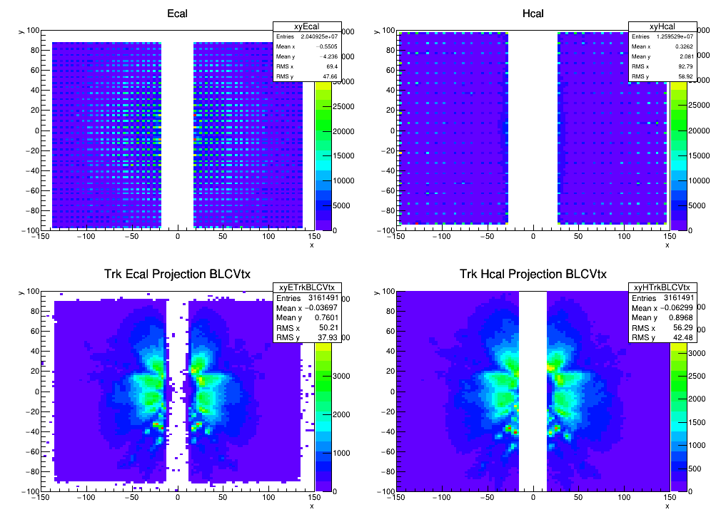
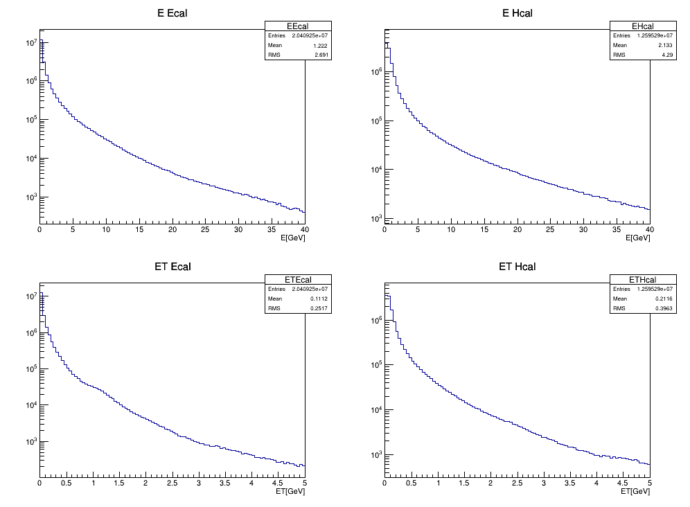
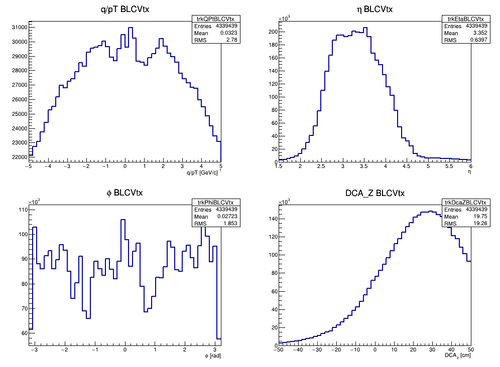

| Trk NHit | XY of fcshit and track projecton | fcs/track ET and E | track q/pT, eta, phi, DCAz | Ecal dx = x(FCS) - x(TRK) and dy , fcsR*dphi , dr |
Hcal dx = x(FCS) - x(TRK) and dy , fcsR*dphi , dr |
| >= 4 |  |
 |
 |
 |
 |


| Trk NHit | Det | Same-Mixed dX | Same-Mixed dY | Same-Mixed fcsR * dPhi | Same-Mixed dR |
| >=4 | Ecal |  |
 |
 |
 |
| >=4 | Hcal |  |
 |
 |
 |
Numbers, ECAL. RMS over |d|<30 cm of the Same−Mixed distribution, and signal-to-background inside |d|<15 cm, as the two halves:
| coordinate | RMS [cm] | S/B |
|---|---|---|
| dX | 11.55 / 12.07 | 0.078 / 0.079 |
| dY | 9.74 / 8.14 | 0.095 / 0.092 |
| fcsR*dPhi | 7.11 / 6.94 | 0.091 / 0.093 |
| dR | 14.03 / 14.41 | 0.095 / 0.232 |
The matched fraction is small by construction: forward tracks are mostly charged hadrons, which ECAL sees only as a MIP for about half of them and as partial energy loss for the rest, while ECAL itself is dominated by photons from pi0 that leave no track. fcsR*dPhi is much narrower than dR, so the mismatch is radial rather than azimuthal — which is what a wrong z, i.e. the assumed shower-max depth, would produce. HCAL is not quoted: its S/B is 0.03–0.08 and after subtraction the content inside |d|<30 cm cancels, so those widths are artefacts. S/B here is about five times worse than zero field: roughly 90% of the raw histogram is combinatorial.
OGAWA, Akio akio@bnl.gov